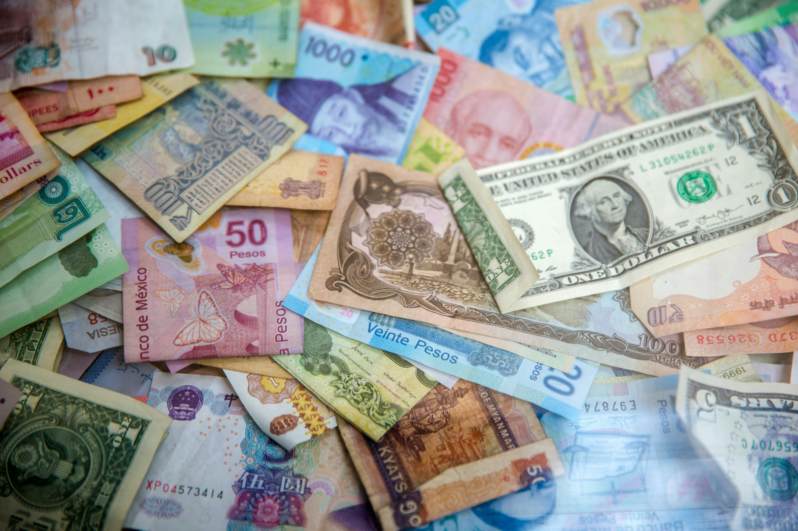
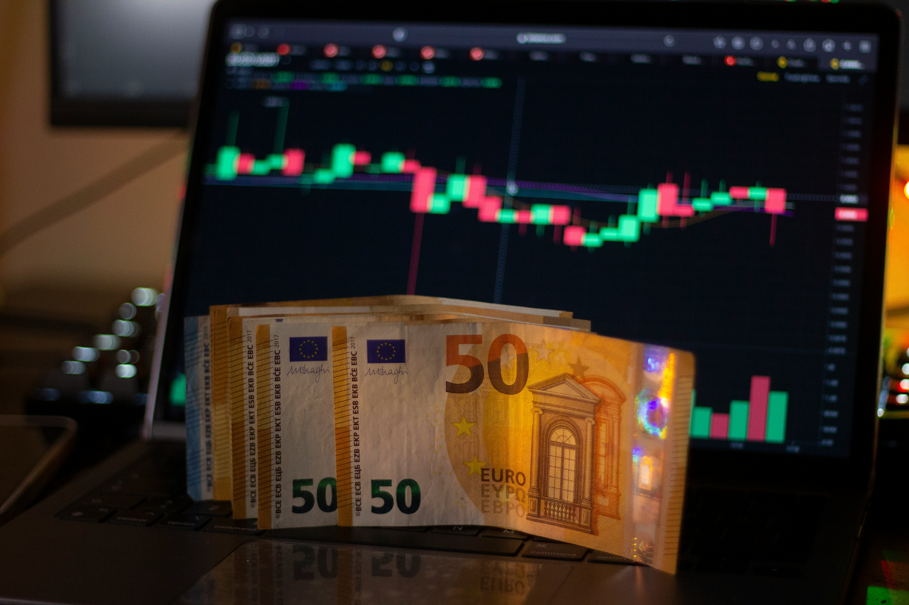

Forex & Currencies

In today's lesson, we will delve into the fascinating world of currencies and the foreign exchange market, commonly known as forex. Understanding how currencies are traded, the factors that influence their values, and the impact of exchange rates on global economics are crucial for anyone interested in finance, trade, or global economics.
Let's begin!
What Is Forex(FX)
Forex (FX) refers to the global electronic marketplace for trading international currencies and currency derivatives. It has no central physical location, yet the forex market is the largest, most liquid market in the world by trading volume, with trillions of dollars changing hands every day. Most of the trading is done through banks, brokers, and financial institutions.
Forex Pairs and Quotes
Currencies being traded are listed in pairs, such as USD/CAD, EUR/USD, or USD/JPY. These represent the U.S. dollar (USD) versus the Canadian dollar (CAD), the Euro (EUR) versus the USD, and the USD versus the Japanese Yen (JPY), respectively.
Forex Lots
In the forex market, currencies trade in lots called micro, mini, and standard lots. A micro lot is 1,000 units of a given currency, a mini lot is 10,000, and a standard lot is 100,000.
This is obviously exchanging money on a larger scale than going to a bank to exchange $500 to take on a trip. When trading in the electronic forex market, trades take place in blocks of currency, and they can be traded in any volume desired, within the limits allowed by the individual trading account balance. For example, you can trade seven micro lots (7,000) or three mini lots (30,000), or 75 standard lots (7,500,000).
How large is forex?
The forex market is unique for several reasons, the main one being its size. Trading volume is generally very large. The Forex market trades over $5 trillion per day compared to $200 billion for the equities market.
The largest foreign exchange markets are located in major global financial centers including London, New York, Singapore, Tokyo, Frankfurt, Hong Kong, and Sydney.
How to trade Forex?
The forex market is open 24 hours a day, five days a week, in major financial centers across the globe. This means that you can buy or sell currencies at virtually any hour.
In the past, forex trading was largely limited to governments, large companies, and hedge funds. Now, anyone can trade on forex. Many investment firms, banks, and retail brokers allow individuals to open accounts and trade currencies.
When trading in the forex market, you're buying or selling the currency of a particular country, relative to another currency. But there's no physical exchange of money from one party to another as at a foreign exchange kiosk.
In the world of electronic markets, traders usually take a position in a specific currency with the hope that there will be some upward movement and strength in the currency they're buying (or weakness if they're selling) so that they can make a profit.
A currency is always traded relative to another currency. If you sell a currency, you are buying another, and if you buy a currency you are selling another. The profit is made on the difference between your transaction prices.

How Forex Differs From Other Markets?
There are some major differences between the way the forex operates and other markets such as the U.S. stock market.
Fewer rules
This means investors aren't held to as strict standards or regulations as those in the stock, futures, or options markets. There are no clearinghouses and no central bodies that oversee the entire forex market. You can short-sell at any time because in forex you aren't ever actually shorting; if you sell one currency you are buying another.
Fees and Commissions
Since the market is unregulated, fees and commissions vary widely among brokers. Most forex brokers make money by marking up the spread on currency pairs. Others make money by charging a commission, which fluctuates based on the amount of currency traded. Some brokers use both.
Full Access
There's no cut-off as to when you can and cannot trade. Because the market is open 24 hours a day, you can trade at any time of day. The exception is weekends, or when no global financial center is open due to a holiday.
Leverage
The forex market allows for leverage up to 1:50 in the U.S. and even higher in some parts of the world. That means a trader can open an account for $1,000 and buy or sell as much as $50,000 in currency. Leverage is a double-edged sword; it magnifies both profits and losses.
Should you try forex trading?
Well, in my opinion, forex trading is one of hte most complicated types of trading there are, so you should learn a lot before you start.
There are many risks to forex trading. Exchange rates are very volatile, changing often, which could quickly impact a trade. There is also a significant amount of leverage involved in FX, meaning small movements can result in large losses. In addition, there is transaction risk, interest rate risk, and global or country risk.
Thanks for reading!
Sources:
- Unsplash - for images
- Investopedia ecyclopedia
- Forex.com